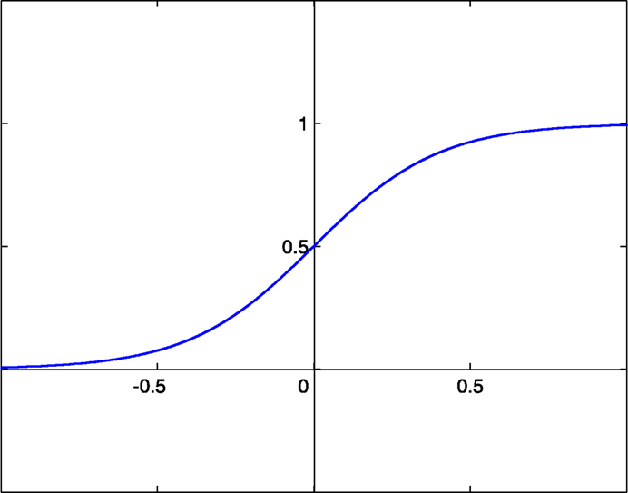

日期：113/06/12
講題: 深度學習應用在紅樹林觀測
所屬單位 : 國立中央大學遙測中心
職稱: 助理教授
依照教授的說法，機器學習就是一種分類器，我們希望它可以告訴我們是什麼或是不是什麼。實際上就是不同的向量，向量和變數(x,y)內積之後就會的到一個方程式且在二維x, y軸所形成的平面上。這個方程式會是一條直線，這個直線把平面分成兩半，所以才稱為分類器。
但是單靠一個向量只能二分而已，是或不是，在線上或是太接近線上的都不能很好的分類，所以在原先判斷是或不是時會將結果用0表示「不是」，1表示「是」。在後來的研究之中都使用sigmoid function 並用更多函數層層堆疊。
這篇兩篇研究是研究生主動來找教授談及的，因為家鄉印度有範圍廣大的紅樹林，且紅樹林對於固炭、吸收CO2的產氧效率非常好，可遏止溫室氣體過量，在未來環保議題有十分大的潛力和影響力。
基本上，兩篇研究都聚焦在紅樹林在災害後的消長的模型預測，可在講解過程中並沒有特別專注於每個步驟做了什麼細微的處理，反而強調了資料的應用和訓練的條件影響成果很大。例如：如何在大家都用同樣的情況下，成果做得比別人好，如何取得較好的原始資料。
在論文中，都是用NASA去開飛機實際拍下來的照片，但在訓練時將結果分為三種：原本沒有紅樹林的、有紅樹林但災害之後沒事的和有紅樹林但災害之後消失的。這樣的分類不僅提升效率，還大幅增加了研究成果的準確率。